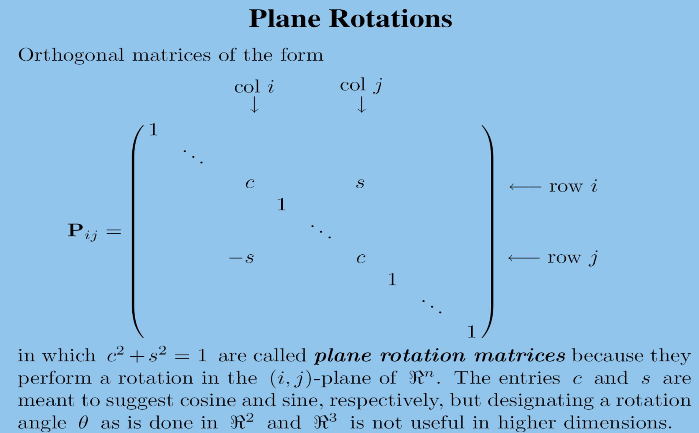

模和内积
向量模
Euclidean Vector Norm
欧几里得向量模
-
\(||x|| = (\sum_i x_i^2) ^{\frac{1}{2}} = \sqrt{x^T x}\) 当 \(x \in \mathcal{R}^{n \times 1}\)
-
\(||x|| = (\sum_i x_i^2) ^{\frac{1}{2}} = \sqrt{x^* x}\) 当 \(x \in \mathcal{C}^{n \times 1}\)
Euclidean 模保证了：\(||x|| \ge 0, ||x|| = 0 \Leftrightarrow x = 0, ||\alpha x|| = \alpha ||x||\)
并且对于一个模非零的的向量，标准化为 \(\frac{x}{||x||}\)。
Cauchy Schwarz inequality
\(|x^* y| \le ||x|| ||y||\) 对于所有的 \(x,y \in \mathcal{C}^{n \times 1}\)
等式成立的时候，当切仅当 \(y = \alpha x, \alpha = \frac{x * y}{x * x} = \frac{x * y} {||x||}\)
证明方法通过构造性证明，直接构造这个 \(\alpha\) ，然后得到 \(\alpha x - y = 0\) ，平方这个式子大于0就可以证明出。
三角不等式： \(||x + y || \le ||x|| + ||y||\) 对于任意的 \(x,y \in \mathcal{C}^{n \times 1}\)
证明：\(||x + y|| ^2 = (x + y) ^ * (x + y) = x^* x + x^* y + y^* x + y^* y = ||x||^2 + x^* y + y^* x + ||y||^2\) ，又由于 \(x^*y + y^*x = 2 Re(x^* y) \le 2|x^* y| \le 2 ||x|| ||y||\)，所以\(||x+y||^2 \le ||x||^2 + 2 ||x|| ||y|| + ||y||^2 = (||x|| + ||Y||)^2\) 证明成功。
p-Norms
对于 \(p \ge 1\) , p模定义为 \(||x||_p = (\sum_i |x_i|^p)^{\frac{1}{p}}\)
可以证明p模同样满足上面 Euclidean 模的性质。
而且还有一个更一般的CBS不等式对于p模，\(|x^* y| \le ||x||_p ||y||_q\)，其中 \(\frac{1}{p} + \frac{1}{q} = 1\)
矩阵模
Frobenius 矩阵模
\(||A||^2_F = \sum_{i,j} |a_{ij}|^2 = \sum_i ||A_{i*}||^2_2 = \sum_j ||A_{*j}||^2_2 = trac(A^* A)\)
CBS不等式
\(||Ax||^2_2 = \sum_i |A_{i*} x|^2 \le \sum_i ||A_{i*}||^2_2 ||x||^2_2 = ||A||^2_F ||x||^2_2\)
即 \(||Ax||_2 \le ||A||_F ||X||_2\)
\(||AB||^2_F = \sum_j ||[AB]*j||^2_2 = \sum_j ||AB*j||^2_2 \le \sum_j ||A||^2_F ||B*j||^2_2 = ||A||^2_F ||B||^2_F\)
即 \(||AB||_F \le ||A||_F ||B||_F\)
定义 Induced Matrix Norms 为 \(||A|| = max_{||x||=1} ||Ax||\) 对于 \(A \in \mathcal{C}^{m \times n}, x \in \mathcal{C}^{n \times 1}\)
这个定义是对与所有的模为一的向量，将线性变换A作用到这个向量上之后模的最大值。
显然有： \(||Ax|| \le ||A|| ||x||\) ，对于任意的向量，因为把\(||x||\)除到等式左边就可以单位化了。
当\(A\) 是一个非奇异矩阵的时候，\(min_{||x||=1} ||Ax|| = \frac{1}{||A^{-1}||}\)
可以说，诱导模就代表了单位球上面的向量可以被A拉伸的最大值。
Matrix 2-norm
矩阵的模可以被欧几里得模诱导：
\(||A||_2 = max_{||x||_2 = 1} ||Ax||_2 = \sqrt{\lambda _{max}}\)
当A是一个非奇异矩阵时
\(||A^{-1}||_2 = \frac{1}{min_{||x||_2 = 1} ||Ax||_2} = \frac{1}{\sqrt{\lambda _{min}}}\)
这里的\(\lambda\) 是 \(A^* A\) 的特征值。
2模的性质
\(||A||_2 = max_{||x||_2 = 1} max_{||y||_2=1} |y^* A x|\)，因为只有和自己同向的进行内积才最大。
\(||A||_2 = ||A^*||_2\)
\(||A^*A||_2 = ||A||^2_2\)
$$ || \begin{pmatrix} A & 0 \ 0 & B \ \end{pmatrix} ||_2 = max{ ||A||_2, ||B||_2 } $$ 这个可以根据上面的特征值来解释。
\(||U^*AV||_2 = ||A||_2\) 当 \(UU^* = I\) 并且 \(VV^* = I\)
矩阵的1模：\(||A||_1 = max_{||x||_1 = 1} ||Ax||_1 = max_j \sum_i |a_{ij}|\)。其实就是最大的列绝对值和。
根据定义换一下求和顺序，即可证明。
矩阵的无穷模：\(||A||_{\infty} = max_{||x||_{\infty}} ||Ax||_{\infty} = max_i \sum_j |a_{ij}|\)。就是最大的行的绝对值和。
inner product
一个内积是在一个实向量空间中的一个函数，将有序向量对x,y去映射到实数。
inner product 性质
\(<x|x>\) real 并且并且 \(<x|x> \le 0\)，并且 \(<x|x> = 0\) 的时候当且仅当 \(x=0\)
\(<x| \alpha y> = \alpha <x|y>\)
\(<x | y + z > = <x | y> + <x | z>\)
\(<x|y> = \overline{<y|x>}\) 因为是在复数情况下，所有有个共轭。
一个标准内积就是 \(<x|y> = x^T y\)
对于一个非奇异矩阵A，那么 \(<x|y> = x^* A^* A y\) 也是一个内积。这个内积称为A内积，或者椭圆内积 elliptical inner product。
对于矩阵的内积 \(<A|B> = trace(A^T B)\)，如果是复数的话 \(<A|B> = trace(A^* B)\) 。这个称为矩阵的标准内积。
对于每个一般的内积，在内积空间中定义一个模为 \(||*|| = \sqrt{<*|*>}\)
所有的内积空间是一个模空间。但是模空间不一定是内积空间。
Parallelogram Identity
对于一个模为 \(||*||\) 的向量空间，如果存在在一个内积在空间中如 \(<*|*> = ||x||^2\)。那么当且仅当：
\(||x+y||^2 + ||x-y||^2 = 2 (||x||^2 + ||y||^2)\)
现在要考虑在高纬度空间中， 直角 应该怎么表示？
两个向量之间的角度测量可以通过 \(cos \theta = \frac{<x|y>}{||x|| ||y||}\)。
对于一个 标准正交集合 ，Orthonormal Sets ： \(\mathcal{B} = \{ \mu_1 ,\mu_2 ,...,\mu_n \}\) ， 其中 \(|| \mu_i || = 1\)，并且 \(<\mu_i | \mu_j>\) 当 \(i==j\) 时为1，当 \(i \neq j\) 时为0。
每个标准正交集合都是线性无关的。
为什么要使用标准正交基
因为可以方便的计算一个向量在标准坐标基下的坐标表示。
记 \(v = \alpha_1 u_1 + \alpha_2 u_2 + ... + \alpha_n u_n\)
那么等式左右两边都和 \(u_1\) 做内积可得
\(<v|u_1> = \alpha_1 u_1 u_1 = \alpha_1\)，所以 \(\alpha_1 = <v|u_1> = <u_1 | v>\)
同理，可得 \(v = <u_1 | v> u_1 + <u_2 | v> u_2 + ... + <u_n | v> u_n\)。这个叫做关于v的 Fourier expansion 。
Gram-Schmidt procedure
施密特正交化
是一种逐渐向集合中添加元素的做法。新加如一个元素，只需要减去这个向量在集合中各个向量的方向分量，就可以得到与集合中所有元素都垂直向量，然后单位化后加入集合中。
新加的入的向量，可以由集合中标准正交向量这样表示： \(x_{k+1} = \sum_{1 \le i \le k+1} <u_i | x_{k+1}> u_i\)
那么可以推导出新的向量为 \(u_{k+1} = \frac{x_{k+1} - \sum_{1 \le i \le k} <u_i | x_{k+1}> u_i}{<u_{k+1} | x_{k+1} >}\)
这里有个位置变量 \(<u_{k+1} | x_{k+1}>\) ，这个变量其实不重要，因为最后是单位化的，所以其实\(|<u_{k+1} | x_{k+1}>| = ||x_{k+1} - \sum_{1 \le i \le k} <u_i | x_{k+1}> u_i||\)
所以其实 \(<u_{k+1} | x_{k+1} > = e^{i \theta} ||x_{k+1} - \sum_{1 \le i \le k} <u_i | x_{k+1}> u_i||\)，其中 \(0 \le \theta \le 2\pi\)
这里 \(\theta\) 其实可以随便定义，不做什么要求，也可以直接取 \(\theta = 0\)
有 QR 分解。
对于一个矩阵 \(A_{m\times n} = (a_1 | a_2 | a_3 | ...| a_n)\)
对列向量进行施密特正交化之后得到 \(Q = (q_1 | q_2 | q_3 |... | q_n)\)。就有如下关系
其中 \(v_1 = ||a_1||\) 并且 \(v_k = ||a_{k+1} - \sum_{1 \le i \le k} <q_i | a_{k+1}> q_i||\)
施密特正交化是一个强力的理论工具，但是不是一个好的数值算法。在处理浮点运算的时，会有误差问题。
原先式子 \(u_{k} = \frac{x_{k} - \sum_{1 \le i \le k - 1} <u_i | x_{k}> u_i}{<u_{k} | x_{k} >}\)。 其中分子 \(x_{k} - \sum_{1 \le i \le k - 1} <u_i | x_{k}> u_i = (I - U_k U_k^*) x_{k}\)，其中 \(U_k = (u_1 | u_2 | u_3 | ... | u_{k-1})\)
因为 \(<u_i | x_k> u_i = u_i^* x_k * u_i = u_i u_i^* x_k\)，使用数乘交换性即可
然后定义 \(E_i = I - u_{i-1} u_{i-1}^*\)，那么其实 \(I-U_k U_k^* = E_k ... E_2 E_1\)
这个就是修改之后的 Schmidt 算法。在原先算法中，第k步只对第k个向量进行修改，修改后的算法，会更新到最后一个向量。
酉矩阵 Unitary Matrices ，这个矩阵的列向量是由 \(C^n\) 中的一组标准正交基组成。
正交矩阵 Orthogonal Matrices，这个矩阵的列向量是由 \(R^n\) 中的一组标准正交基组成。
性质有，正交矩阵 \(P\)，\(P^{-1} = P^T\)，并且 \(||Px||_2 = ||x||_2\)
characterization
-
这里正交矩阵一定是一个方阵，因为存在逆矩阵
-
其中正交矩阵P存在标准正交列和标准正交行
-
\(P^{-1} = P^T\)
-
||Px||_2 = ||x||_2 ，可以通过内积展开即可说明
-
正交变换是不改变模长的
如果存在 \(||Tx|| = ||x||\)，那么称为 isometry 等距变换。
Householder transformation
对于一个向量 \(u\in \mathcal{C}^{n\times 1}\)，如果 \(||u||=1\)，那么存在一个矩阵 \(Q = I - u u^*\) 称为 elementary orthogonal projector .
因为 \((I - uu^*)x\) 是x向量在u向量正交平面上的投影，\(uu^*x\) 是x在u向量方向上的投影。
那么有一个基本的反射矩阵，关于u向量的正交平面进行反射,定义为： \(R = I - 2 * \frac{u u^*}{u^*u}\)，而且当 \(||u||=1\)时，等价为 \(R = I - 2 u u^*\)
初等反射也被称为 householder transformations 。
上面的正交投影 \(Q\)，很容易可以观察到 \(QRx = Qx\)
elementary reflector 性质
所有的elementary reflector R 都是 unitary （单位算子 \(R R^* = I\)）、hermitian (复数下的对称矩阵即 \(R=R^*\))、involutory（自反 R^2 = I）
即为 \(R = R^* = R^{-1}\)
对于任意一个向量 \(x \in \mathcal{x}^{n\times 1}\)，并且 \(x_1 \ne 0\)，那么可以定义一个向量 \(u = x + \mu ||x|| e_1\)，其中如果 \(x_1\) 是实数，\(\mu =1\)，否则 \(\mu = \frac{x_1}{|x_1|}\)
那么可以构造出一个反射器，\(Rx = - \mu ||x|| e_1\)。可以理解为想要将一个向量 \(x\)，反射到向量 \(e_1\)，那么就需要找到这两个向量的垂直平方面， 通过这个面， \(x\) 即可映射到 \(e_1\)，这个面其实就是 \(u\) 的正交平面。
这样做的用处就是可以将矩阵按照列分好后，做多次反射，即可将所有列转化为上三角，即为 QR 分解。
那么可以使用这个方法来构造一个向量的正交基。
\(Ru = 0 = Rx - \mu ||x|| e_1\)，则 \(Rx = \mu ||x||e_1 \Rightarrow x = \mu ||x|| R e_1\)，如果是实数则 \(\mu = 1\)，如果x模是1，则式子就是 \(x = R e_1\)，则反射矩阵的第一列就是矩阵x，R又是正交矩阵，所以R的列构造标准正交基。
上面通过镜面反射是正交矩阵的角度考虑问题，由于旋转天生是等距变换，不改变模长，那么是否可以使用旋转来改变向量。
Givens Transformation
那么考虑一个普通的角度变换
这个旋转操作是按照逆时针选择 \(\theta\) 角度。可以通过三角函数公式证明出来，即 \(rcos(\theta + \varphi) = r cos \theta cos \varphi - r sin \theta sin \varphi = x cos \theta - y sin\theta，rsin(\theta + \varphi) = r sin \theta cos \varphi + r sin \varphi cos \theta = x sin \theta + y cos \theta\)
三维还可以定义正方向，定义角度为正，更高维度就无法定义了，所以丢弃角度概念，定义如下

对于 \(P_{ij}x\) 如果我们定义 \(c = \frac{x_i}{\sqrt{x_i^2 + x_j^2}}, s = \frac{x_j}{\sqrt{x_i^2 + x_j^2}}\)
那么这样对x操作后，x的第j行将变为0。相当于在某个平面中旋转，使得某一个维度刚好在一个基的正交平面上，这样消去一个维度表示。
不断这样操作，即可将x只保留一个元素。
就是说，任何向量都可以旋转为一个标准向量 \(Px=||x|| e_i\) ，其中 \(P = p_{in} ... p_{i,i+1} p_{i,i-1} ... p_{i1}\)。